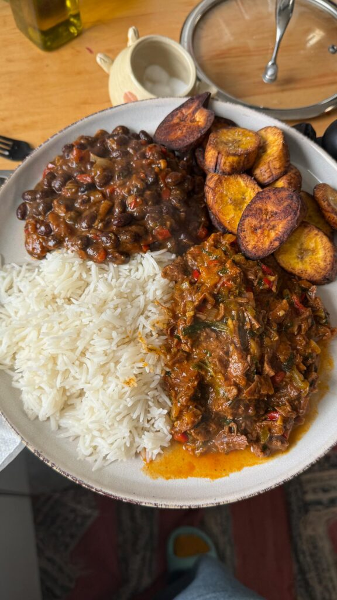

Pabellón Criollo Venezolano
El pabellón criollo es uno de los platos más representativos de Venezuela.
Está compuesto principalmente por arroz blanco, caraotas negras, carne
mechada y tajadas de plátano maduro.

Ingredientes
- Arroz blanco
- Caraotas negras
- Carne de res para mechar
- Plátano maduro
- Cebolla
- Tomate
- Pimentón
- Ajo
- Sal al gusto
- Aceite
Preparación
- Cocinar las caraotas negras hasta que estén blandas.
- Preparar el arroz blanco de manera tradicional.
- Cocinar la carne de res y luego desmecharla en tiras.
- Preparar un sofrito con cebolla, tomate, pimentón y ajo.
- Agregar la carne desmechada al sofrito y cocinar durante unos minutos.
- Cortar el plátano maduro en tajadas y freírlas hasta que estén doradas.
- Servir el arroz, las caraotas, la carne mechada y las tajadas de plátano en el mismo plato.
- Disfrutar del tradicional pabellón criollo venezolano.
Video de la receta
Puedes ver un video sobre la preparación del pabellón criollo
aquí
.